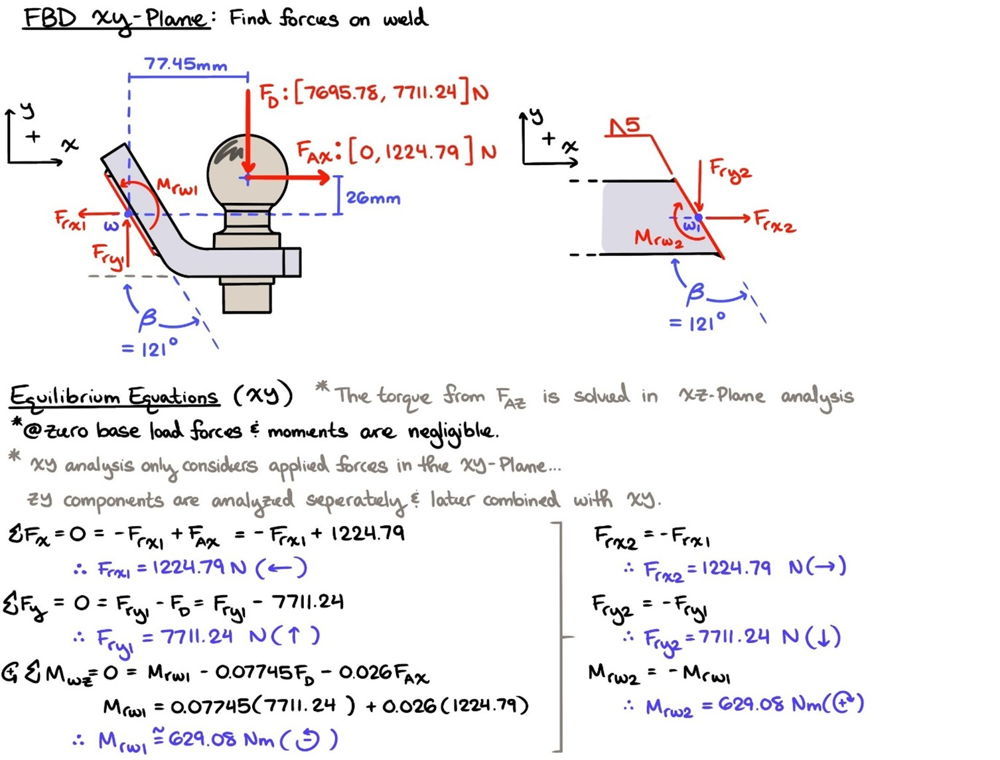
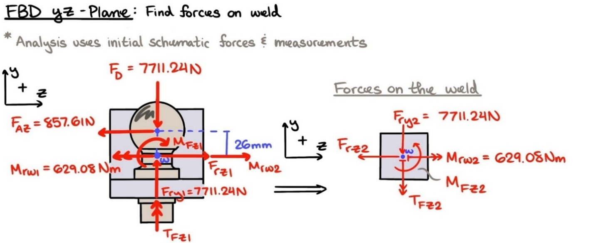
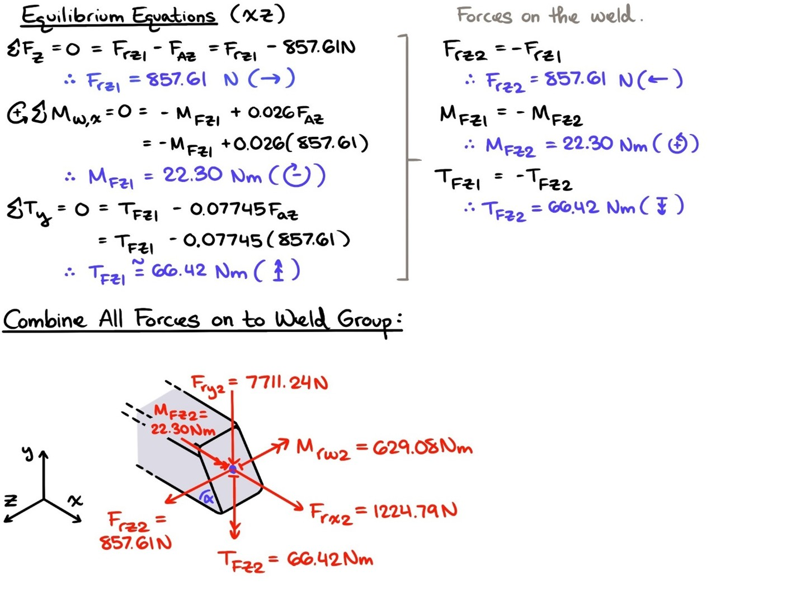
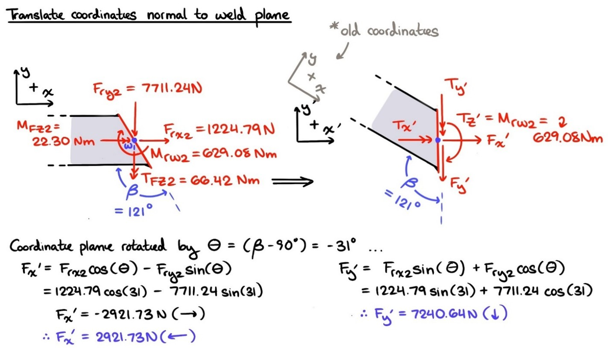
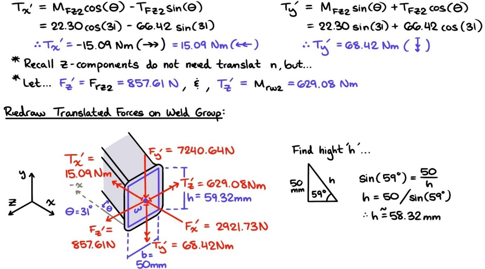
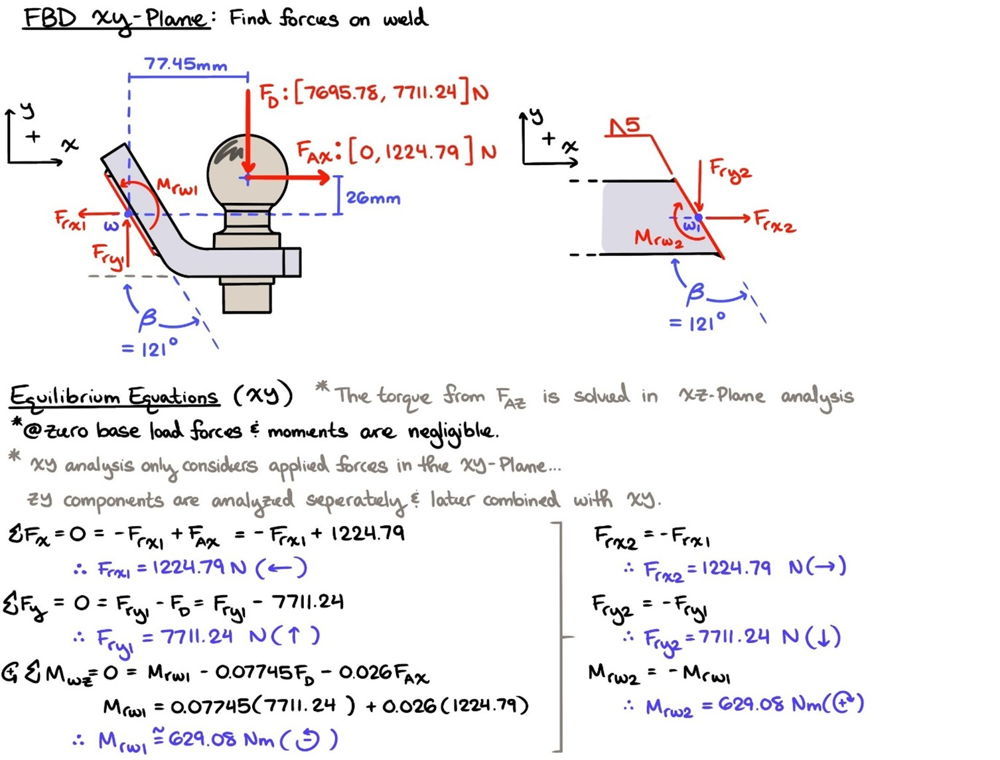
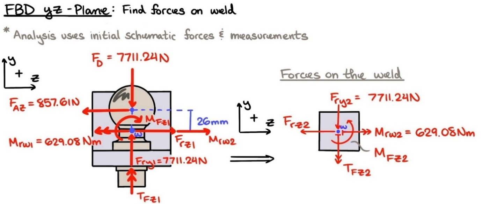
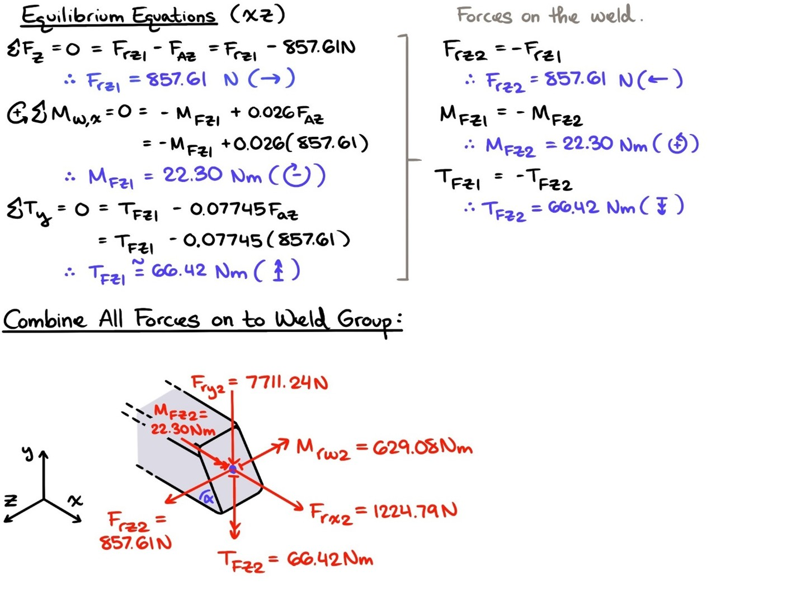
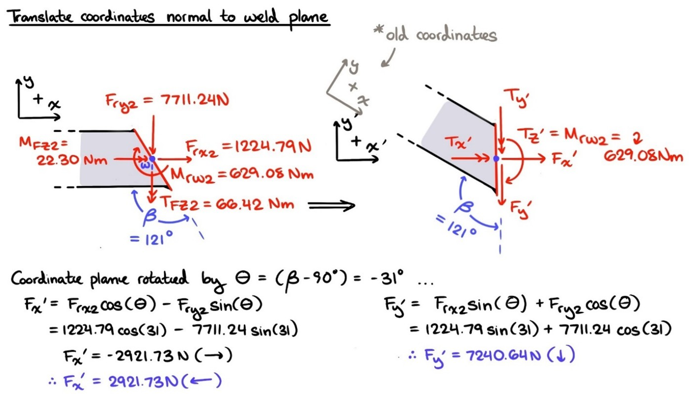
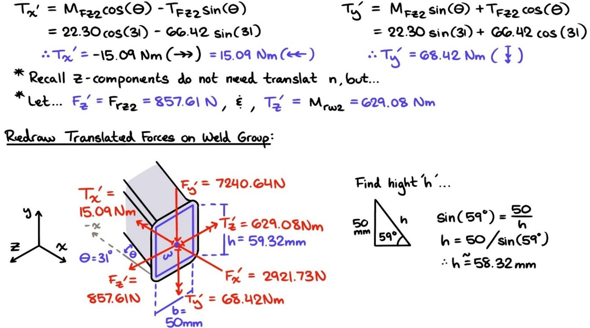

Towbar Audit
This project investigates the structural integrity of a weld group in a real-world heavy-duty towing application. By combining analytical hand calculations with Finite Element Analysis (FEA) in ANSYS, I performed a comprehensive fatigue assessment to determine the weld’s safety under critical loading conditions. This work showcases my expertise in mechanical design, stress analysis, and computational simulation, providing valuable insights into real-world engineering validation. Explore how theoretical modeling enhances engineering reliability.
Project Overview
For this project, I audit the structural integrity of a welded component used in heavy-duty towing applications. Specifically, the study examines the weld group on the tongue of a Hayman Reese towbar fitted to a 2024 Volkswagen Touareg R. The analysis involves both theoretical hand calculations and Finite Element Analysis (FEA) using ANSYS to assess fatigue behavior under real-world loading conditions. A key objective is to evaluate the safety of the weld under varying stress distributions and to compare analytical and computational approaches for result validation. Through this process, critical failure points are identified, and the accuracy of idealized hand calculations versus FEA modeling is examined.
My Role
I worked on this project alone. My role was fairly straightforward: Find a real weld group that undergoes fatigue loading and think of some realistic load cases for it. With these load cases in mind, I needed to determine which was critical and use that load case to audit the safety of the welds.
Technical Skills
- SOLIDWORKS: Modeling, Drafting
- Ansys Mechanical
- Python
Challenges & Solutions
The primary challenge was determining a valid critical load case for the towbar. I based the project on my uncle’s car and trailer, using my own experience with the trailer and a general idea of where the center of gravity might be. However, I didn’t have a precise understanding of the critical load capacity, which would dictate the maximum weight the trailer could safely carry. Instead of simply looking up this information, I decided to tackle the challenge myself. With several load cases to consider, I needed to use an iterative approach—employing a guess-and-check method to accurately pinpoint the trailer’s critical mass.
To expedite this process, I wrote a Python program to automate the calculations for all the potential load cases. This allowed me to input key parameters about the trailer's loading and quickly determine the critical stresses on the towbar’s weld for each load case. Once the code was in place, solving for the critical load case became significantly more efficient. To ensure accuracy, I validated the results through manual calculations and Finite Element Analysis (FEA).
Outcomes & Results
This weld audit focused on assessing the fatigue performance of the Heavy-Duty Hayman Reese Towbar using both hand calculations and finite element analysis (FEA) in ANSYS. Both methods confirmed that the weld group is structurally sound and capable of withstanding the identified critical loading conditions, ensuring ‘infinite life’ under normal use.
While discrepancies were observed between hand calculations and FEA results, this was expected. The ANSYS model provided a more conservative estimate due to the inclusion of filleted weld geometry and stress concentrations, whereas hand calculations relied on idealized assumptions. Despite these differences, both approaches validated the weld’s safety. The study also highlighted the importance of using multiple analysis methods for result verification, as neither analytical nor simulation-based techniques should be relied upon in isolation.
From a broader perspective, this project reinforced key principles of design auditing. Writing parameterized code for analytical calculations improves efficiency and reduces errors, while rigorous model verification in FEA is crucial for reliable results. Although this audit confirmed the towbar’s safety within its analyzed conditions, further experimental testing and adherence to industry standards would provide additional validation for real-world applications.
On a personal level I'm quite proud of my work here, particularly the hand calculations. I have included the key parts of my project working in the section below.
Media
Critical Load Case - Hand Working
Analyze Critical Loading
Anaylze Maximum Load Case
 








